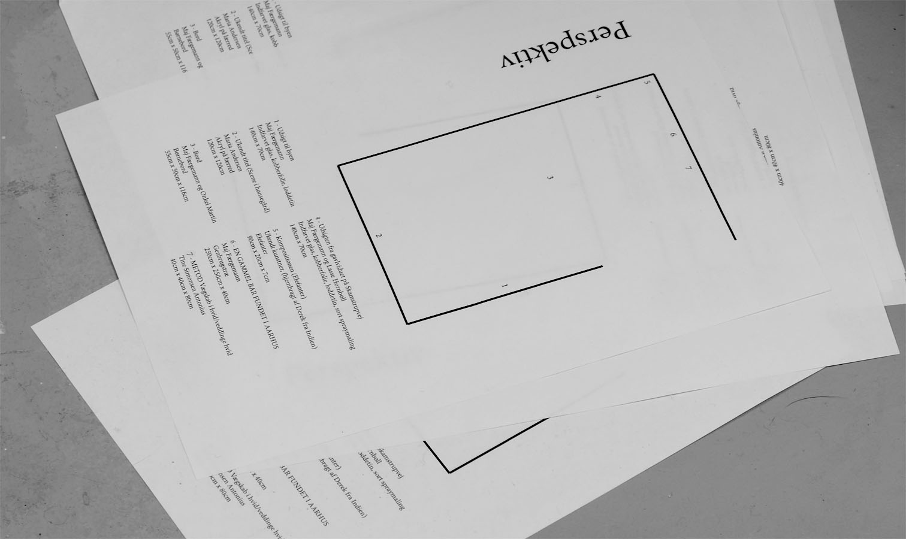
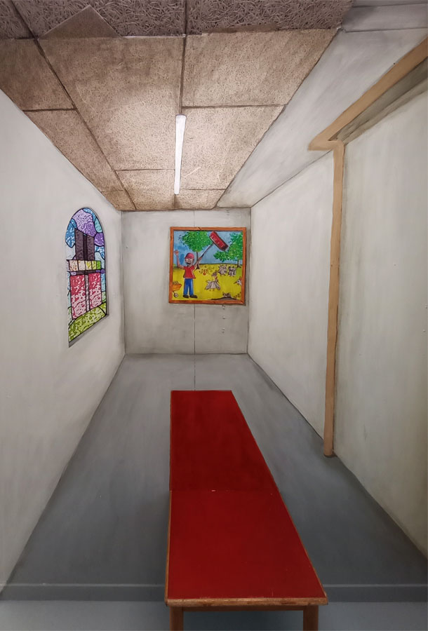

MAJ
FÆRGEMANN
ARCHIVE

Title - year
Desciption


I'M NOT A ROBOT - 2025
Collective work w. Aria Gilani, Bastian Ciffuentes, Nikoloz Mamatsashvili,
Sally Dalgoa and Virgil Bendixen.
The exhibition “I'm not a robot” is one big collective work constructed within one week at Cittipunkt. The
big wall map came to be, through a lengthy association game, where each picture was carefully chosen, and
placed in the grid, on the basis of argumentation and discussion. Where could we be? What could the next
thing you encounter look like?
At the opening we narrated a longer derivé through the city map, using flash-lights to guide us though the darkness of getting lost.
At the opening we narrated a longer derivé through the city map, using flash-lights to guide us though the darkness of getting lost.
WHO MOWS THE LAWN IN THE GARDEN OF EDEN - 2025
Collective work w. Nikita Schwaner, Jeppe Østergaard Bjerg, Þóra
Birgisdóttir and Søren
Katborg.
Who mows the lawn in the garden of Eden? This improve-mythical shadow theatre, that clearly takes place on
the other side of this glass wall, doesn’t answer as many questions as poses. The knight, who sets out to
solve the mystery of the apple missing from the garden of Eden, encounter though his journey even more
mysteries than the just the one. The share amount of mysteries is not something he is able to solve, and
frankly, he doesn’t even engage very much in them. When he finally discover the secrete of the missing
apple, he have to fight an epic battle with a mythical creature shrouded in mystery. How did it end for
the knight? And did it even end?
This might be the most important pseudo-shadow theatre ever to be played in the city of Aarhus.
This might be the most important pseudo-shadow theatre ever to be played in the city of Aarhus.


THUS THE WORLD GOES BACKWARDS - 2025
Exhibited in the group show:
"Grand Move Show" at KH7-artspace.
If any painting wants to be interpreted, it must be “The Flagellation of Christ” by Piero della Francesca,
and in this empty puppet theatre, everybody is invited to play out their own interpretation of this clear,
and yet so opaque painting.
“Philip Guston writes a postcard to Barnett Newman, “This painting is no joke!” On the card is an image of “The Flagellation of Christ” by Piero della Francesca which I visited today in Urbino. Why on earth do the reproductions crop off the left edge?! There is a sliver of space that works with the patterned fabric on the right edge to fix the image in place. “ - quote from some Instagram profile.
“Philip Guston writes a postcard to Barnett Newman, “This painting is no joke!” On the card is an image of “The Flagellation of Christ” by Piero della Francesca which I visited today in Urbino. Why on earth do the reproductions crop off the left edge?! There is a sliver of space that works with the patterned fabric on the right edge to fix the image in place. “ - quote from some Instagram profile.
.jpeg)
.jpeg)
.jpg)
LET ME GET MY SHOES - 2025
En kopi af bogreol en på Det
Jyske Kunstakademi med påmalet hylde, som fortsætter langt ind i reolen? Ikke til at sige hvor langt?? :O
 -- webversion.jpg)
 -- webversion.jpg)
 -- webversion.jpg)
 -- webversion.jpg)
 -- webversion.jpg)
WHY MAKE A MOVIE, WHEN YOU CAN MAKE MORE WORLD? (SHAMPOOOPERA 3) - 2024
Collective work w. Nikita Schwaner
Let us start with Shampooopera 3, to ensure quality to the franchise. You never know if no 1 is a success,
number 2 is never a success, but if you can come back from number 2 and make a number 3, then the
franchise has succeeded. Now the only thing left is a countless number of world building possibilities to
choose from; LEGO set, Nintendo switch game, how about a prequel or a pre-prequel or a pre-pre-prequel? A
soap is a simulation of life you listen to, while simultaniously doing the dishes using soap, hence the
success of the franchise. The soap advertisement worked out nicely with the frustration of the dishes, the
play that wants you to want more at just the right time. We want more soap to clean up the muddiness of
the process! We want more world, lets simulate!
.jpg)
.jpg)
.jpg)
.jpg)
.jpg)
.jpg)
INSTITUTIONAL WARFARE (THE (PATHEPIC) SYMPHONY IN A MINOR NO I.) - 2024
Gesamtkunstwerk-performance at Camp Tickon, made by the after school club "SoSoCs".
“The game of symphonies, composing itself in the forest of Langeland. The curriculum of the latter days saints, Der lange Marsch durch die Institutionen. The troopers of the institution: The janitors wandering through the (battle)field and so on and so forth. Be aware!”
This was a scripted war game, inspired by the Danish school game called “Skovstratego” a structured LARP taking place in a small field. The war game was a war between the two art school institutions, commenting on the general attributes of such institutions. The janitors vs. The teachers. The Students vs. The secretaries. The whole game ended up becoming a sound composition, as everyone’s weapons were a silly instrument of choice, and the game was structured with a meticulous call and response system.
This was a scripted war game, inspired by the Danish school game called “Skovstratego” a structured LARP taking place in a small field. The war game was a war between the two art school institutions, commenting on the general attributes of such institutions. The janitors vs. The teachers. The Students vs. The secretaries. The whole game ended up becoming a sound composition, as everyone’s weapons were a silly instrument of choice, and the game was structured with a meticulous call and response system.
 -- vaerkdokumentation.jpg)
 -- vaerkdokumentation -- webversion.jpg)
 -- vaerkdokumentation -- webversion.jpg)
 -- vaerkdokumentation -- webversion.jpg)
 -- vaerkdokumentation -- webversion.jpg)
3 UDSTILLINGER PÅ 30 MINUTTER I LOKALE PÅ GRIFFENFELDTSGADE - 2024
Exhibition inside an artwork
feat.: Tine Antonius Simonsen, Nikita Schwaner
and Skolekunst & Kunstskoler.
En halv times udstilling til udstillingen "12 på hinanden følgende udstillinger af en halv times varighed
skiftende mellem to rum i LOKALE på Prags Boulevard" - Udstillingen bestod af 3 udstillinger på et
malerlærred, som skiftede hvert 7. minut, hvor udstillende kunstnere var; Tine Antonius Simonsen, Nikita
Schwaner og Skolekunst & Kunstskoler.
 -- webversion_landskab.jpg)
 -- webversion_landskab.jpg)
 -- webversion_landskab.jpg)
 -- webversion_landskab.jpg)
KUNSTSKOLEKUNST / ART SCHOOL ART - 2024
Collectively organized
exhibition w. Søren Katborg, Benjamin Krog Møller,
Ada
Ida Fuglsang Poulsen and Nikita
Schwaner.
The exhibition “Art School Art” unfolded over the duration of a school week at Gallery Taxi. Throughout
the
week, there were presentations, workshops, and excursions. We exhibited documentation from works and
practices, we had been sent by different artists, which closely relate to the art school as a medium and
institution.
In video and A4 format, numerous examples from across Scandinavia appeared, showcasing art school art as
coping strategy, formal investigation, and/or parody of the art school's experiential horizon.
Exhibiting artist: Line Rolf (Performed by: Camilla Haugstrup, Julia Hodell Westman, Zida Bruun, Astrid Haugesen, Lone Knottir // Sound by: Sanne Dasseville), Chili Badse and Anna Stilling, Emma Kallan, Tine Simonsen Antonius, Magnus Lind Nielsen, Alma Lykke Christiansen, Steinar B. Hauge, Ridderen av den bedrøvelige skikkelse, My first Scan, Liv Guhle, Fyns Laboratorie for Ung Kunst, Skolekunst & Kunstskoler.
Exhibiting artist: Line Rolf (Performed by: Camilla Haugstrup, Julia Hodell Westman, Zida Bruun, Astrid Haugesen, Lone Knottir // Sound by: Sanne Dasseville), Chili Badse and Anna Stilling, Emma Kallan, Tine Simonsen Antonius, Magnus Lind Nielsen, Alma Lykke Christiansen, Steinar B. Hauge, Ridderen av den bedrøvelige skikkelse, My first Scan, Liv Guhle, Fyns Laboratorie for Ung Kunst, Skolekunst & Kunstskoler.





PERSPEKTIV / PESPECTIVE - 2024
Exhibition at The Jutland Art
Academy.
LINK to a 360 documentation of the exhibition
LINK to a 360 documentation of the exhibition
7 works exhibited in the exhibition “Perspective” in the exhibition space “MFAterlier”, which stretches
from
my studio (aterlier) at The Jutland Art Academy” and 2,5m further inside the wall. - The exhibition was
open
1,5 hour, correlating with the duration of a plenum art-critique session; being part of the art education
at
The Jutland Art Academy.
 Webversion.jpg)
 Webversion.jpg)
 Webversion.jpg)
SEMESTER - 2024
Boardgame exhibited at the
first year exhibition at Det Jyske Kunstakademi.
Exert from SEMESTER-playin rules.
“Baghistorie.
I Maj måned, modtager alle spillere hver især denne mail:
"Kære Spiller,
Tillykke med optagelse på Det Jyske Kunstakademi.
Vi glæder os til at se dig på akademiet,
Venlig Hilsen Administrationen"
Wow! Hvor vildt! I er optaget på Det Jyske Kunstakademi! I har det bare så fedt, og glæder jer helt vildt meget til at starte!
1.September går det hele løs!
Sig goddag til hinanden! I skal sammen spille jer gennem første semester på Det Jyske Kunstakademi - for at nå frem til den frygtede og berygtede førsteårsudstilling. På vejen skal I samle Studiepoint og lave fede værker til jeres portfolio, inden I til sidst skal udstille”
“Baghistorie.
I Maj måned, modtager alle spillere hver især denne mail:
"Kære Spiller,
Tillykke med optagelse på Det Jyske Kunstakademi.
Vi glæder os til at se dig på akademiet,
Venlig Hilsen Administrationen"
Wow! Hvor vildt! I er optaget på Det Jyske Kunstakademi! I har det bare så fedt, og glæder jer helt vildt meget til at starte!
1.September går det hele løs!
Sig goddag til hinanden! I skal sammen spille jer gennem første semester på Det Jyske Kunstakademi - for at nå frem til den frygtede og berygtede førsteårsudstilling. På vejen skal I samle Studiepoint og lave fede værker til jeres portfolio, inden I til sidst skal udstille”

HVOR ER K,U,N,S OG T - 2023
Bidrag til tidsskrift som aldrig udkom


NÅR SKYGGERNE BLIR LANGE - 2023
Collective work w. Nikita Schwaner
Let us start with Shampooopera 3, to ensure quality to the franchise. You never know if no 1 is a success,
number 2 is never a success, but if you can come back from number 2 and make a number 3, then the
franchise
has succeeded. Now the only thing left is a countless number of world building possibilities to choose
from;
LEGO set, Nintendo switch game, how about a prequel or a pre-prequel or a pre-pre-prequel? A soap is a
simulation of life you listen to, while simultaniously doing the dishes using soap, hence the success of
the
franchise. The soap advertisement worked out nicely with the frustration of the dishes, the play that
wants
you to want more at just the right time. We want more soap to clean up the muddiness of the process! We
want
more world, lets simulate!
 -- vaerkdokumentation -- webversion_landskab.jpg)
 -- vaerkdokumentation -- webversion_landskab.jpg)
 -- vaerkdokumentation -- webversion_landskab.jpg )
 -- vaerkdokumentation -- webversion_landskab.jpg)
 -- vaerkdokumentation -- webversion_landskab.jpg)
 -- vaerkdokumentation -- webversion_landskab.jpg)
 -- vaerkdokumentation -- webversion_landskab.jpg)
HUSK HISTORIEN - 2023
Værket Svendborg 1533 var udstillet i Svendborg Museums udstillingssted “Den Sorte Boks”. Værket består af
installationen i montren og et 46 minutter langt lydspor. Lydsporet er et sammenklip af en
bordrollespilssession, hvor deltagere spiller sin igennem den svendborggensiske optrapning til Grevens
Fejde, og en langlsøbende raportage fra en solo-ekskursion de nuliggende Ørkild-volde.
 -- vaerkdokumentation -- webversion.jpg)
 -- vaerkdokumentation -- webversion.jpg)
 -- vaerkdokumentation -- webversion.jpg)
HELLO WORLD / VUF - 2022
Beskrivelse
 -- vaerkdokumentation -- webversion_landskab.jpg)
 -- vaerkdokumentation -- webversion_landskab.jpg)
 -- vaerkdokumentation -- webversion_landskab.jpg)
 -- vaerkdokumentation -- webversion_landskab.jpg)
MASTODONTER PÅ LERFØDDER - 2022
Beskrivelse
 -- vaerkdokumentation -- webversion_landskab.jpg)
 -- vaerkdokumentation -- webversion_landskab.jpg)
 -- vaerkdokumentation -- webversion_landskab.jpg)
 -- vaerkdokumentation -- webversion_landskab.jpg)
MARSMARKEN DER SLÅR RØDDER - 2020
Beskrivelse